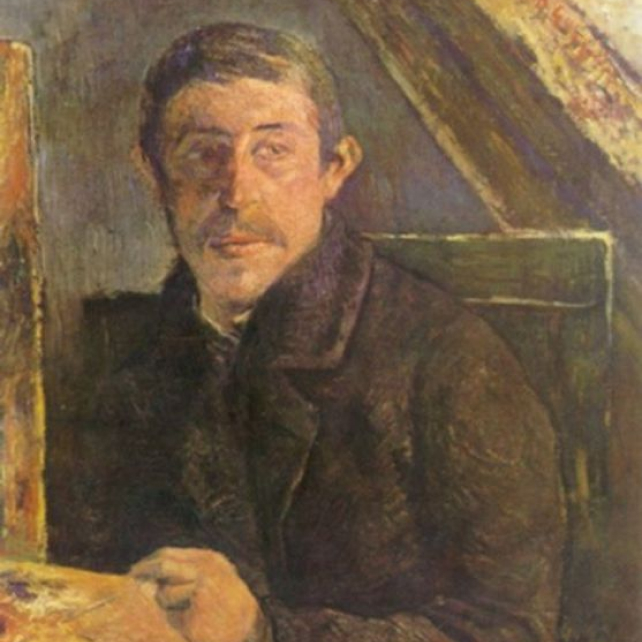

Eugène Henri Paul Gauguin
1848.6.7 ~ 1903.5.8
Gauguin's work inspired French avant-garde writers such as Pablo Picasso and Henri Matisse. After Gauguin's death, Ambroise Bollard, an art dealer in Paris, held two posthumous exhibitions in Paris, and only then did he gain fame.
